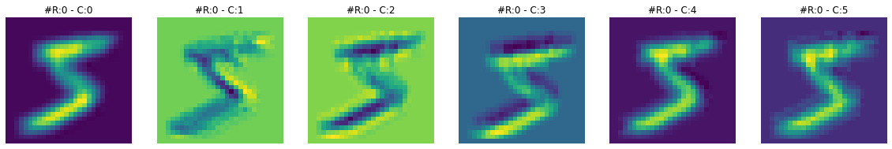
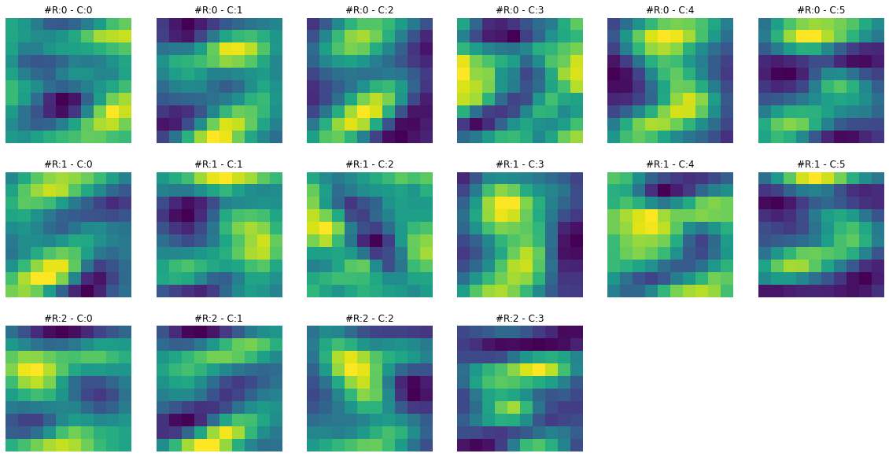
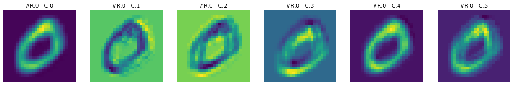
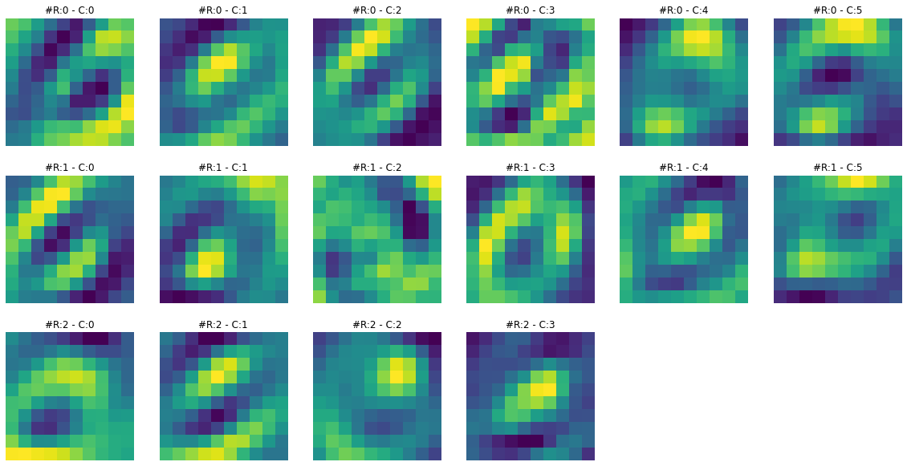
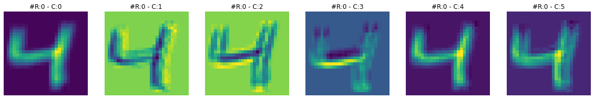
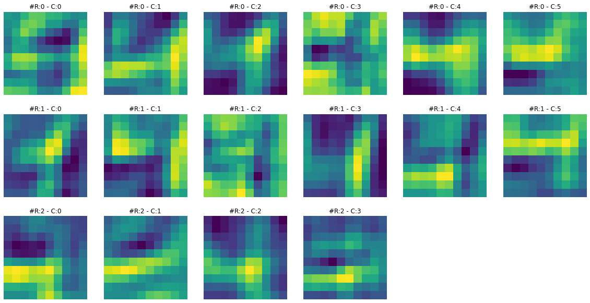
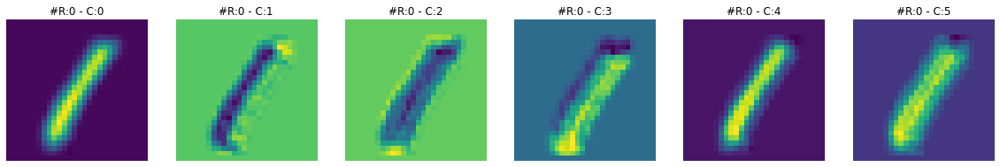
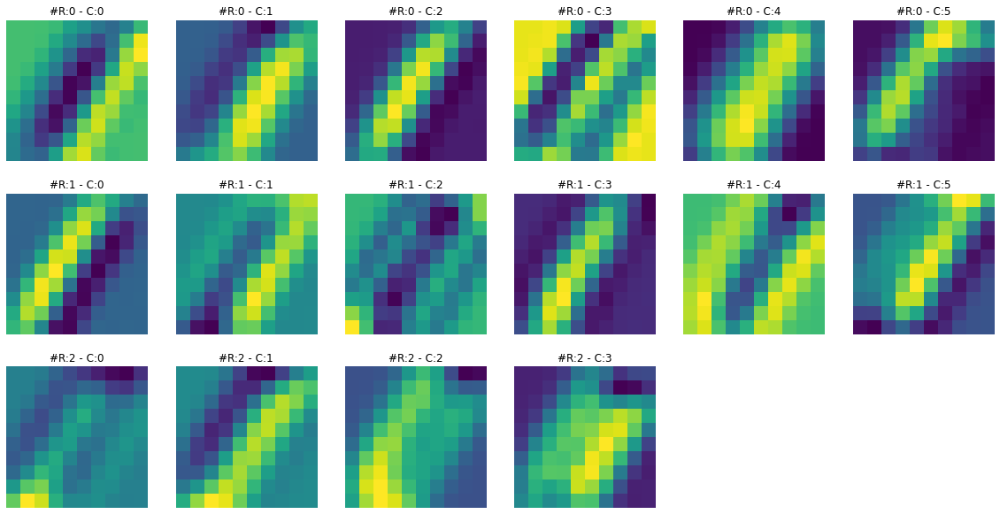
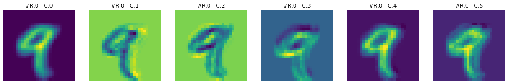
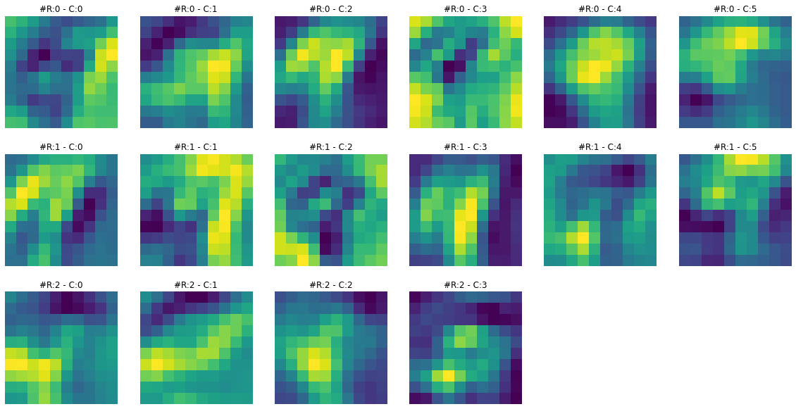

Code
python==3.7.15
numpy==1.21.6
torch==1.12.1+cu113
matplotlib==3.2.2
We will train a LeNet-5 CNN model with PyTorch on the MNIST dataset in this notebook. Given below is the summary of the steps followed in this notebook.
Train and Validation datasets. Then convert them into mini-batches using PyTorch DataLoader classThis notebook is prepared with Google Colab.
python==3.7.15
numpy==1.21.6
torch==1.12.1+cu113
matplotlib==3.2.2This notebook takes inspiration and ideas from the following two sources.
medium.com platform. Eugenia Anello can also be found on her linkedin profile.MNIST dataset can be downloaded easily from PyTorch built-in datasets provided under torchvision.datasets. In this section, we will download it, split it into train and test datasets, and then convert it into PyTorch tensors.
torchvision.transforms.Compose is like a container to hold a list of transformations you intend to apply. Read more about it heretorchvision.transforms.ToTensor converts a PIL Image or numpy.ndarray to tensor. It converts a PIL Image or numpy.ndarray (H x W x C) in the range [0, 255] to a torch.FloatTensor of shape (C x H x W) in the range [0.0, 1.0]. Here C=Channel, H=Height, W=Width. Read more about this transformation here#collapse-output
import torchvision
import numpy as np
train_dataset = torchvision.datasets.MNIST('classifier_data', train=True, download=True)
test_dataset = torchvision.datasets.MNIST('classifier_data', train=False, download=True)
transform = torchvision.transforms.Compose([
torchvision.transforms.ToTensor()
])
train_dataset.transform=transform
test_dataset.transform=transform
print(f"Total training images: {len(train_dataset)}")
print(f"Shape of an image: {np.shape(train_dataset.data[7])}")
print(f"Values of an image: \n{train_dataset.data[7]}")Total training images: 60000
Shape of an image: torch.Size([28, 28])
Values of an image:
tensor([[ 0, 0, 0, 0, 0, 0, 0, 0, 0, 0, 0, 0, 0, 0,
0, 0, 0, 0, 0, 0, 0, 0, 0, 0, 0, 0, 0, 0],
[ 0, 0, 0, 0, 0, 0, 0, 0, 0, 0, 0, 0, 0, 0,
0, 0, 0, 0, 0, 0, 0, 0, 0, 0, 0, 0, 0, 0],
[ 0, 0, 0, 0, 0, 0, 0, 0, 0, 0, 0, 0, 0, 0,
0, 0, 0, 0, 0, 0, 0, 0, 0, 0, 0, 0, 0, 0],
[ 0, 0, 0, 0, 0, 0, 0, 0, 0, 0, 0, 0, 0, 0,
0, 0, 0, 0, 0, 0, 0, 0, 0, 0, 0, 0, 0, 0],
[ 0, 0, 0, 0, 0, 0, 0, 0, 0, 0, 0, 0, 0, 0,
0, 0, 0, 0, 0, 0, 0, 0, 0, 0, 0, 0, 0, 0],
[ 0, 0, 0, 0, 0, 0, 0, 0, 0, 0, 0, 38, 43, 105,
255, 253, 253, 253, 253, 253, 174, 6, 0, 0, 0, 0, 0, 0],
[ 0, 0, 0, 0, 0, 0, 0, 0, 0, 43, 139, 224, 226, 252,
253, 252, 252, 252, 252, 252, 252, 158, 14, 0, 0, 0, 0, 0],
[ 0, 0, 0, 0, 0, 0, 0, 0, 0, 178, 252, 252, 252, 252,
253, 252, 252, 252, 252, 252, 252, 252, 59, 0, 0, 0, 0, 0],
[ 0, 0, 0, 0, 0, 0, 0, 0, 0, 109, 252, 252, 230, 132,
133, 132, 132, 189, 252, 252, 252, 252, 59, 0, 0, 0, 0, 0],
[ 0, 0, 0, 0, 0, 0, 0, 0, 0, 4, 29, 29, 24, 0,
0, 0, 0, 14, 226, 252, 252, 172, 7, 0, 0, 0, 0, 0],
[ 0, 0, 0, 0, 0, 0, 0, 0, 0, 0, 0, 0, 0, 0,
0, 0, 0, 85, 243, 252, 252, 144, 0, 0, 0, 0, 0, 0],
[ 0, 0, 0, 0, 0, 0, 0, 0, 0, 0, 0, 0, 0, 0,
0, 0, 88, 189, 252, 252, 252, 14, 0, 0, 0, 0, 0, 0],
[ 0, 0, 0, 0, 0, 0, 0, 0, 0, 0, 0, 0, 0, 0,
91, 212, 247, 252, 252, 252, 204, 9, 0, 0, 0, 0, 0, 0],
[ 0, 0, 0, 0, 0, 0, 0, 0, 0, 32, 125, 193, 193, 193,
253, 252, 252, 252, 238, 102, 28, 0, 0, 0, 0, 0, 0, 0],
[ 0, 0, 0, 0, 0, 0, 0, 0, 45, 222, 252, 252, 252, 252,
253, 252, 252, 252, 177, 0, 0, 0, 0, 0, 0, 0, 0, 0],
[ 0, 0, 0, 0, 0, 0, 0, 0, 45, 223, 253, 253, 253, 253,
255, 253, 253, 253, 253, 74, 0, 0, 0, 0, 0, 0, 0, 0],
[ 0, 0, 0, 0, 0, 0, 0, 0, 0, 31, 123, 52, 44, 44,
44, 44, 143, 252, 252, 74, 0, 0, 0, 0, 0, 0, 0, 0],
[ 0, 0, 0, 0, 0, 0, 0, 0, 0, 0, 0, 0, 0, 0,
0, 0, 15, 252, 252, 74, 0, 0, 0, 0, 0, 0, 0, 0],
[ 0, 0, 0, 0, 0, 0, 0, 0, 0, 0, 0, 0, 0, 0,
0, 0, 86, 252, 252, 74, 0, 0, 0, 0, 0, 0, 0, 0],
[ 0, 0, 0, 0, 0, 0, 5, 75, 9, 0, 0, 0, 0, 0,
0, 98, 242, 252, 252, 74, 0, 0, 0, 0, 0, 0, 0, 0],
[ 0, 0, 0, 0, 0, 61, 183, 252, 29, 0, 0, 0, 0, 18,
92, 239, 252, 252, 243, 65, 0, 0, 0, 0, 0, 0, 0, 0],
[ 0, 0, 0, 0, 0, 208, 252, 252, 147, 134, 134, 134, 134, 203,
253, 252, 252, 188, 83, 0, 0, 0, 0, 0, 0, 0, 0, 0],
[ 0, 0, 0, 0, 0, 208, 252, 252, 252, 252, 252, 252, 252, 252,
253, 230, 153, 8, 0, 0, 0, 0, 0, 0, 0, 0, 0, 0],
[ 0, 0, 0, 0, 0, 49, 157, 252, 252, 252, 252, 252, 217, 207,
146, 45, 0, 0, 0, 0, 0, 0, 0, 0, 0, 0, 0, 0],
[ 0, 0, 0, 0, 0, 0, 7, 103, 235, 252, 172, 103, 24, 0,
0, 0, 0, 0, 0, 0, 0, 0, 0, 0, 0, 0, 0, 0],
[ 0, 0, 0, 0, 0, 0, 0, 0, 0, 0, 0, 0, 0, 0,
0, 0, 0, 0, 0, 0, 0, 0, 0, 0, 0, 0, 0, 0],
[ 0, 0, 0, 0, 0, 0, 0, 0, 0, 0, 0, 0, 0, 0,
0, 0, 0, 0, 0, 0, 0, 0, 0, 0, 0, 0, 0, 0],
[ 0, 0, 0, 0, 0, 0, 0, 0, 0, 0, 0, 0, 0, 0,
0, 0, 0, 0, 0, 0, 0, 0, 0, 0, 0, 0, 0, 0]],
dtype=torch.uint8)From the above cell output, there are 60,000 training images. The shape of each image is 28 x 28, which means it is a 2D matrix. We have also printed the values of one image, but they don’t make much sense unless we view them as an image. So let’s do that.
Now let’s load our data into Dataset and DataLoader classes. PyTorch Dataset is a helper class that converts data and labels into a list of tuples. DataLoader is another helper class to create batches from Dataset tuples. batch_size means the number of tuples we want in a single batch. We have used 128 here, so each fetch from DataLoader will give us a list of 128 tuples.
import torch
from torch.utils.data import Dataset, DataLoader, random_split
train_size=len(train_dataset)
# Randomly split the data into non-overlapping train and validation set
# train size = 70% and validation size = 30%
train_data, val_data = random_split(train_dataset, [int(train_size*0.7), int(train_size - train_size*0.7)])
batch_size=128
# Load data into DataLoader class
train_loader = torch.utils.data.DataLoader(train_dataset, batch_size=batch_size)
valid_loader = torch.utils.data.DataLoader(val_data, batch_size=batch_size)
print(f"Batches in Train Loader: {len(train_loader)}")
print(f"Batches in Valid Loader: {len(valid_loader)}")
print(f"Examples in Train Loader: {len(train_loader.sampler)}")
print(f"Examples in Valid Loader: {len(valid_loader.sampler)}")Batches in Train Loader: 469
Batches in Valid Loader: 141
Examples in Train Loader: 60000
Examples in Valid Loader: 18000##
# Helper function to plot images from DataLoader
def plot_images(images, targets, n_plot=30):
n_rows = n_plot // 10 + ((n_plot % 10) > 0)
fig, axes = plt.subplots(n_rows, 10, figsize=(15, 1.5 * n_rows))
axes = np.atleast_2d(axes)
for i, (image, target) in enumerate(zip(images[:n_plot], targets[:n_plot])):
row, col = i // 10, i % 10
ax = axes[row, col]
ax.set_title('#{} - Label:{}'.format(i, target), {'size': 12})
# plot filter channel in grayscale
ax.imshow(image.squeeze(), cmap='gray', vmin=0, vmax=1)
for ax in axes.flat:
ax.set_xticks([])
ax.set_yticks([])
ax.label_outer()
plt.tight_layout()
return fig
## Code taken from https://github.com/dvgodoy/PyTorchStepByStep/blob/master/plots/chapter5.pyLet’s plot some dataset images along with their labels from a batch.
In this section we will implement a class that encapsulates all the usual steps required in training a PyTorch model. This way we can focus more on the model architecture and performance, and less concerned about the boilerplate training loop. Important parts of this class are
__init__: Class constructor to define the main actors in a training cycle including model, optimizer, loss function, training and validation DataLoaders_make_train_step_fn: Training pipeline is usually called “training step” which includes the following steps
_make_val_step_fn: Validation pipeline is usually called the “validation step” which includes the following steps
_mini_batch: It defines the steps to process a single minibatch in a helper function. For a mini-batch processing, we want to
train: Execute training and validation steps for given number of epochpredict: Make a prediction from model on provided dataclass DeepLearningPipeline(object):
def __init__(self, model, loss_fn, optimizer):
# Here we define the attributes of our class
# We start by storing the arguments as attributes
# to use them later
self.model = model
self.loss_fn = loss_fn
self.optimizer = optimizer
self.device = 'cuda' if torch.cuda.is_available() else 'cpu'
# Let's send the model to the specified device right away
self.model.to(self.device)
# These attributes are defined here, but since they are
# not informed at the moment of creation, we keep them None
self.train_loader = None
self.val_loader = None
self.writer = None
# These attributes are going to be computed internally
self.losses = []
self.val_losses = []
self.total_epochs = 0
# Creates the train_step function for our model,
# loss function and optimizer
# Note: there are NO ARGS there! It makes use of the class
# attributes directly
self.train_step_fn = self._make_train_step_fn()
# Creates the val_step function for our model and loss
self.val_step_fn = self._make_val_step_fn()
def set_loaders(self, train_loader, val_loader=None):
# This method allows the user to define which train_loader (and val_loader, optionally) to use
# Both loaders are then assigned to attributes of the class
# So they can be referred to later
self.train_loader = train_loader
self.val_loader = val_loader
def _make_train_step_fn(self):
# This method does not need ARGS... it can refer to
# the attributes: self.model, self.loss_fn and self.optimizer
# Builds function that performs a step in the train loop
def perform_train_step_fn(x, y):
# Sets model to TRAIN mode
self.model.train()
# Step 1 - Computes our model's predicted output - forward pass
yhat = self.model(x)
# Step 2 - Computes the loss
loss = self.loss_fn(yhat, y)
# Step 3 - Computes gradients for both "a" and "b" parameters
loss.backward()
# Step 4 - Updates parameters using gradients and the learning rate
self.optimizer.step()
self.optimizer.zero_grad()
# Returns the loss
return loss.item()
# Returns the function that will be called inside the train loop
return perform_train_step_fn
def _make_val_step_fn(self):
# Builds function that performs a step in the validation loop
def perform_val_step_fn(x, y):
# Sets model to EVAL mode
self.model.eval()
# Step 1 - Computes our model's predicted output - forward pass
yhat = self.model(x)
# Step 2 - Computes the loss
loss = self.loss_fn(yhat, y)
# There is no need to compute Steps 3 and 4,
# since we don't update parameters during evaluation
return loss.item()
return perform_val_step_fn
def _mini_batch(self, validation=False):
# The mini-batch can be used with both loaders
# The argument `validation`defines which loader and
# corresponding step function is going to be used
if validation:
data_loader = self.val_loader
step_fn = self.val_step_fn
else:
data_loader = self.train_loader
step_fn = self.train_step_fn
if data_loader is None:
return None
# Once the data loader and step function, this is the
# same mini-batch loop we had before
mini_batch_losses = []
for x_batch, y_batch in data_loader:
x_batch = x_batch.to(self.device)
y_batch = y_batch.to(self.device)
mini_batch_loss = step_fn(x_batch, y_batch)
mini_batch_losses.append(mini_batch_loss)
loss = np.mean(mini_batch_losses)
return loss
def set_seed(self, seed=42):
torch.backends.cudnn.deterministic = True
torch.backends.cudnn.benchmark = False
torch.manual_seed(seed)
np.random.seed(seed)
def train(self, n_epochs, seed=42):
# To ensure reproducibility of the training process
self.set_seed(seed)
for epoch in range(n_epochs):
# Keeps track of the numbers of epochs
# by updating the corresponding attribute
self.total_epochs += 1
# inner loop
# Performs training using mini-batches
loss = self._mini_batch(validation=False)
self.losses.append(loss)
# VALIDATION
# no gradients in validation!
with torch.no_grad():
# Performs evaluation using mini-batches
val_loss = self._mini_batch(validation=True)
self.val_losses.append(val_loss)
# If a SummaryWriter has been set...
if self.writer:
scalars = {'training': loss}
if val_loss is not None:
scalars.update({'validation': val_loss})
# Records both losses for each epoch under the main tag "loss"
self.writer.add_scalars(main_tag='loss',
tag_scalar_dict=scalars,
global_step=epoch)
print(f"epoch: {epoch:3}, train loss: {loss:.5f}, valid loss: {val_loss:.5f}")
if self.writer:
# Closes the writer
self.writer.close()
def predict(self, x):
# Set is to evaluation mode for predictions
self.model.eval()
# Takes aNumpy input and make it a float tensor
x_tensor = torch.as_tensor(x).float()
# Send input to device and uses model for prediction
y_hat_tensor = self.model(x_tensor.to(self.device))
# Set it back to train mode
self.model.train()
# Detaches it, brings it to CPU and back to Numpy
return y_hat_tensor.detach().cpu().numpy()
def plot_losses(self):
fig = plt.figure(figsize=(10, 4))
plt.plot(self.losses, label='Training Loss', c='b')
plt.plot(self.val_losses, label='Validation Loss', c='r')
plt.yscale('log')
plt.xlabel('Epochs')
plt.ylabel('Loss')
plt.legend()
plt.tight_layout()
return fig
Source: Generated using Alexander Lenail’s NN-SVG and adapted by the author [“Daniel Voigt Godoy”]. For more details, see LeCun, Y., et al (1998). Gradient-based learning applied to document recognition. Proceedings of the IEEE,86(11), 2278–2324
Image taken from dvgodoy/PyTorchStepByStep
import torch.nn as nn
lenet = nn.Sequential()
# Featurizer
# Block 1: 1@28x28 -> 6@28x28 -> 6@14x14
lenet.add_module('C1', nn.Conv2d(in_channels=1, out_channels=6, kernel_size=5, padding=2))
lenet.add_module('func1', nn.ReLU())
lenet.add_module('S2', nn.MaxPool2d(kernel_size=2))
# Block 2: 6@14x14 -> 16@10x10 -> 16@5x5
lenet.add_module('C3', nn.Conv2d(in_channels=6, out_channels=16, kernel_size=5))
lenet.add_module('func2', nn.ReLU())
lenet.add_module('S4', nn.MaxPool2d(kernel_size=2))
# Block 3: 16@5x5 -> 120@1x1
lenet.add_module('C5', nn.Conv2d(in_channels=16, out_channels=120, kernel_size=5))
lenet.add_module('func2', nn.ReLU())
# Flattening
lenet.add_module('flatten', nn.Flatten())
# Classification
# Hidden Layer
lenet.add_module('F6', nn.Linear(in_features=120, out_features=84))
lenet.add_module('func3', nn.ReLU())
# Output Layer
lenet.add_module('OUTPUT', nn.Linear(in_features=84, out_features=10))Now let’s create optimizer and a loss function.
Now let’s train our model for 20 epochs.
n_epochs = 20
dlp = DeepLearningPipeline(model, loss_fn, optimizer)
dlp.set_loaders(train_loader, valid_loader)
dlp.train(n_epochs)epoch: 0, train loss: 2.29349, valid loss: 2.28632
epoch: 1, train loss: 2.27442, valid loss: 2.25871
epoch: 2, train loss: 2.22077, valid loss: 2.15503
epoch: 3, train loss: 1.85172, valid loss: 1.27419
epoch: 4, train loss: 0.82061, valid loss: 0.59110
epoch: 5, train loss: 0.50765, valid loss: 0.45872
epoch: 6, train loss: 0.41486, valid loss: 0.39295
epoch: 7, train loss: 0.36466, valid loss: 0.35130
epoch: 8, train loss: 0.33108, valid loss: 0.32108
epoch: 9, train loss: 0.30512, valid loss: 0.29665
epoch: 10, train loss: 0.28347, valid loss: 0.27550
epoch: 11, train loss: 0.26473, valid loss: 0.25711
epoch: 12, train loss: 0.24807, valid loss: 0.24056
epoch: 13, train loss: 0.23314, valid loss: 0.22590
epoch: 14, train loss: 0.21989, valid loss: 0.21282
epoch: 15, train loss: 0.20804, valid loss: 0.20097
epoch: 16, train loss: 0.19743, valid loss: 0.19028
epoch: 17, train loss: 0.18791, valid loss: 0.18065
epoch: 18, train loss: 0.17929, valid loss: 0.17199
epoch: 19, train loss: 0.17142, valid loss: 0.16408Let’s see how our training and validation loss looks like.
Neural network convolutional layers are a stack of square matrices. We repeatedly apply these matrices or filters on images, and the output of this operation is called convolutions. These convolutions act as intermediate (or new) datasets generated from the images (a kind of dynamic feature engineering). We try to learn from these convolutions and calculate a loss for them. Initially, the value for these filters is randomly selected. If the loss is high, we try slowly changing values or weights for these filters. Changing filter values also create changes in outputs or convolutions. If a convolution results in a slight decrease in loss, we take it as a good sign and try to move in that direction (make more similar changes). If we try these steps repeatedly, we might find good convolutions (or good weights in the filter, as they are the source of convolutions). By “good weights”, we mean that the final loss is significantly lower than a random value.
These convolutional filters are created in PyTorch using class nn.Conv2d. A filter can have one matrix or a stack of matrices under it. Matrices under a filter are sometimes called kernels, but I will stick to the filter and matrix terms to avoid confusion.
So If we look at the LeNet-5 model configuration, we will find that we created three convolutional filters or nn.Conv2d layers. Let’s print the dimension of these layers.
model_weights = []
conv_layers = []
model_children = list(model.children())
# counter to keep count of the conv layers
counter = 0
# append all the conv layers and their respective weights to the list
for i in range(len(model_children)):
if type(model_children[i]) == nn.Conv2d:
counter += 1
model_weights.append(model_children[i].weight)
conv_layers.append(model_children[i])
print(f"Total convolutional layers: {counter}")
for weight, conv in zip(model_weights, conv_layers):
print(f"CONV: {conv} ====> SHAPE: {weight.shape}")Total convolutional layers: 3
CONV: Conv2d(1, 6, kernel_size=(5, 5), stride=(1, 1), padding=(2, 2)) ====> SHAPE: torch.Size([6, 1, 5, 5])
CONV: Conv2d(6, 16, kernel_size=(5, 5), stride=(1, 1)) ====> SHAPE: torch.Size([16, 6, 5, 5])
CONV: Conv2d(16, 120, kernel_size=(5, 5), stride=(1, 1)) ====> SHAPE: torch.Size([120, 16, 5, 5])The output of the above cell tells us that
[6, 1, 5, 5]. It means we have 6 filters in this layer. Each filter has 1 matrix of dimension 5x5 under it.[16, 6, 5, 5]. It means we have 16 filters. Each filter has 6 matrices of size 5x5 under it.[120, 16, 5, 5]. It means we have 120 filters. Each filter has 16 matrices of size 5x5 under it.Note that the learned weights from these matrices are stored in model_weights list, which we will visualize in the next section.
##
# Helper function to visualize filters
def visualize_filters(layer, n_plots=30):
# Get layer dimensions. e.g. `[6, 1, 5, 5]` where
# filters=6, kernels=1, kernel_height=5, kernel_weight=5
filters, kernels, kernel_height, kernel_weight = layer.shape
# total plots = total number of matrices present in a layer.
# Each matrix weights can be plotted as an image
total_plots = filters * kernels
# total_plots can be too many. So let's create an upper limit on them as 'MAX_PLOTS'
MAX_PLOTS = min(n_plots, total_plots)
# number of columns for our plots 'MAX_COL_PLOTS'
MAX_COL_PLOTS = 10
# number of rows for our plots 'MAX_ROW_PLOTS'
MAX_ROW_PLOTS = max(MAX_PLOTS // MAX_COL_PLOTS, MAX_COL_PLOTS)
# specify some size of each plot image
plt.figure(figsize=(20, 2.5*MAX_ROW_PLOTS)) # width, height
plt.tight_layout()
plot_count = 1
# interate filters
for f, filter in enumerate(layer):
# iterate kernels under each filter
for k, kernel in enumerate(filter):
# plot a single kernel or a matrix
plt.subplot(MAX_ROW_PLOTS, MAX_COL_PLOTS, plot_count)
plt.imshow(kernel[:, :].detach().cpu().numpy(), cmap='gray')
plt.title('#F:{} - K:{}'.format(f, k), {'size': 12})
plt.axis('off')
plot_count += 1
# terminate on `MAX_PLOTS`
if plot_count > MAX_PLOTS:
return plt.show()
plt.show()These learned filter (2d matrix) images seem very random. How can these filters create an output (convolution or intermediate dataset) that can help our model to learn and classify an image to its correct class? Filters usually learn to find edges and curves from images. When these filters are applied to images, they amplify certain aspects of these images, like edges, curves, lines, or other patterns.
Looking just at the filters does not give us much information. So in the next section, we will visualize the outputs (or convolutions) produced by these filters.
The output produced by a neural net layer is called its feature map. These layers can be convolutional, flattening, or linear (fully connected). For example, in our LeNet-5 model, we have three convolutional layers, and each of these layers produces a feature map. In this section, we will visualize them.
A hook is simply a function we can give to our model to execute after its forward or backward pass. While attaching (or registering) a hook to a model, we provide the layer name on which we want to connect it. A hook function takes three arguments.
Let’s define a function that will serve as our hook.
Let’s also define a function to visualize the feature maps.
##
# Helper funtion to visualize the feature maps
def visualize_feature_map(layer, n_plots=30, cmap='gray', repeats=5, figsize=(5, 5)):
# get feature map values and store them as 'act'
act = layer.squeeze()
# if feature map has three dimension
if len(act.shape) == 3:
total_plots, plot_width, plot_height = act.shape
# total_plots can be too many so let's create an upper limit on them as 'MAX_PLOT'
MAX_PLOT = min(total_plots, n_plots)
# number of columns for our plots as 'MAX_COL_PLOTS'
MAX_COL_PLOTS = 6
# number of rows for our plots as 'MAX_ROW_PLOTs'
MAX_ROW_PLOTs = max(MAX_PLOT // MAX_COL_PLOTS, MAX_COL_PLOTS)
# specify some size for each plot image
plt.figure(figsize=(20, 3.5*MAX_ROW_PLOTs)) # width, height
plt.tight_layout()
plot_count = 0
for i in range(MAX_ROW_PLOTs):
for j in range(MAX_COL_PLOTS):
plt.subplot(MAX_ROW_PLOTs, MAX_COL_PLOTS, plot_count+1)
plt.imshow(act[plot_count].detach().cpu().numpy(), cmap=cmap)
plt.title('#R:{} - C:{}'.format(i, j), {'size': 12})
plt.axis('off')
plot_count += 1
# terminate if plot_count reaches MAX_PLOT
if plot_count >= MAX_PLOT:
return plt.show()
else: # len(act.shape) == 3
# if feature map has two dimension
arr_r = np.repeat(act.reshape(1,-1), repeats=repeats, axis=0)
plt.figure(figsize=figsize) # width, height
plt.tight_layout()
plt.imshow(arr_r, cmap=cmap)
plt.axis('off')
return plt.show()Let’s register our hook to first convolutional layer and visualize its feature map.
##
# empty 'activation' as a precaution
activation = {}
# first 'Conv2d' layer is named as 'C1'
handle = model.C1.register_forward_hook(get_activation('C1'))
# take any dataset image. image '7' is for three number
data, label = train_dataset[7]
data.unsqueeze_(0)
output = model(data)
# remove hook
handle.remove()
print(f"Dimensions for C1 feature map: {activation['C1'].squeeze().shape}")Dimensions for C1 feature map: torch.Size([6, 28, 28])Let’s register our hook to second convolutional layer and visualize its feature map.
##
# empty 'activation' as a precaution
activation = {}
# second 'Conv2d' layer is named as 'C3'
handle = model.C3.register_forward_hook(get_activation('C3'))
# take any dataset image. image '7' is for three number
data, label = train_dataset[7]
data.unsqueeze_(0)
output = model(data)
# remove hook
handle.remove()
print(f"Dimensions for C3 feature map: {activation['C3'].squeeze().shape}")Dimensions for C3 feature map: torch.Size([16, 10, 10])Feature maps from the first layer show that they are sharper. Feature maps from the second layer show that they are more spread out or convolved. By spreading out or blurring effect, it seems like only the most significant features remain in the output, and the rest slowly disappear. For example, in the case of ‘3’ in the second feature map, only the horizontal edge signal remains, and any other signal gets dissolved.
To get more intuition of what is happening here, let’s visualize both feature maps together and for multiple images.
##
# Visualize feature maps for C1 and C3 together
# Visualize them for first 5 train images
for i in range(5):
# just a separator.
print(f"{'*'*30} IMAGE {i} {'*'*30}")
# empty 'activation' as a precaution
activation = {}
# create hooks for C1 and C3
handle1 = model.C1.register_forward_hook(get_activation('C1'))
handle2 = model.C3.register_forward_hook(get_activation('C3'))
data, _ = train_dataset[i]
data.unsqueeze_(0)
output = model(data)
# remove hooks
handle1.remove()
handle2.remove()
# visualize feature maps
# I have chaged the colors of output to sharpen the differences
visualize_feature_map(activation['C1'], cmap='viridis')
visualize_feature_map(activation['C3'], cmap='viridis')****************************** IMAGE 0 ******************************

****************************** IMAGE 1 ******************************

****************************** IMAGE 2 ******************************

****************************** IMAGE 3 ******************************

****************************** IMAGE 4 ******************************

Let’s register our hook to third convolutional layer and visualize its feature map.
##
# empty 'activation' as a precaution
activation = {}
# third 'Conv2d' layer is named as 'C5'
handle = model.C5.register_forward_hook(get_activation('C5'))
# take any dataset image. image '7' is for three number
data, label = train_dataset[7]
data.unsqueeze_(0)
output = model(data)
# remove hook
handle.remove()
print(f"Dimensions for C5 feature map: {activation['C5'].squeeze().shape}")Dimensions for C5 feature map: torch.Size([120])The output from the third ‘Conv2d’ layer C5 looks like a signature bar code that the model learns to associate with a particular target class. Let’s visualize more of them for a set of 1, 3, and 5 images together.
##
# create a collection of 1, 3, and 5 images
bucket = {'1':[], '3':[], '5':[]}
# iterate through the dataset till we have 5 images for each class
count_1, count_3, count_5 = 0,0,0
for idx in range(100):
_, label = train_dataset[idx]
if label == 1 and count_1 < 5:
bucket[str(label)].append(idx)
count_1 +=1
elif label == 3 and count_3 < 5:
bucket[str(label)].append(idx)
count_3 +=1
elif label == 5 and count_5 < 5:
bucket[str(label)].append(idx)
count_5 +=1
if count_1 + count_3 + count_5 == 15:
break##
# visualize feature maps for a set of images from class 1, 3 and 5
for key in bucket:
print(f"{'*'*30} LAYER C5, LABEL {key} {'*'*30}")
for i in range(len(bucket[key])):
activation = {}
# attach hook
handle = model.C5.register_forward_hook(get_activation('C5'))
idx = bucket[key][i]
data, label = train_dataset[idx]
data.unsqueeze_(0)
output = model(data)
# remove hook
handle.remove()
# visualize feature map
# i have changed the output colormap to sharpen the differences
visualize_feature_map(activation['C5'], cmap='hsv', figsize=(20,15))****************************** LAYER C5, LABEL 1 ************************************************************ LAYER C5, LABEL 3 ************************************************************ LAYER C5, LABEL 5 ******************************


{kind=link}